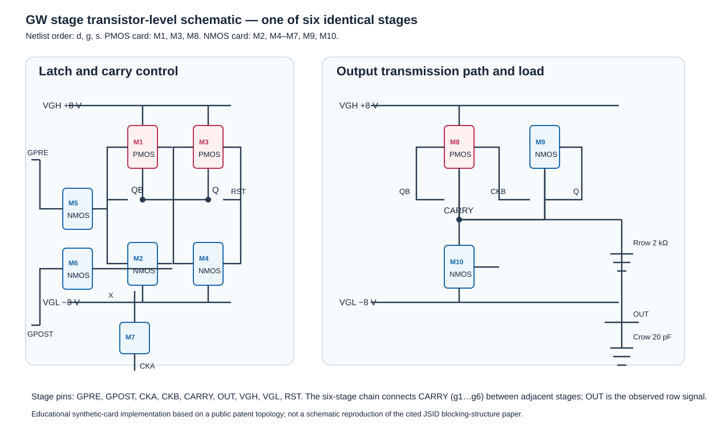

논문 주장과 검증 범위
대상 논문
Hwarim Im, Eun Kyo Jung, Shin-Hyeong Kim, Kook Chul Moon, Yong-Sang Kim, “Oxide TFT-Based Scan Driver Circuit With Blocking Structure for Multisignal Output,” Journal of the Society for Information Display, 2026, DOI 10.1002/jsid.70114.
원문은 Wiley 유료 Version of Record다. 이 저장소는 원문 PDF를 복제하지 않으며 DOI에서 합법적으로 열람해야 한다.
공개 초록의 주장
- Blocking structure로 제어 노드를 분리해 클록 간섭과 원치 않는 펄스를 줄인다.
- 한 스테이지의 다중 출력으로 전력 42.3% 감소를 보고한다.
- 회로 시뮬레이션에서 Vth −1.6~+0.8 V 안정 동작을 보고한다.
이 저장소가 실행한 검증
bash scripts/run_gw_example.sh <dVth>는 OpenVAF로 models/tft.va를 OSDI로 컴파일한 뒤, ngspice에서 6단 complementary-TFT GW 체인을 과도해석한다. 각 OUT이 자기 시간 슬롯에서 정확히 한 번만 0 V를 넘고, min ≥ −8.5 V 및 max ≥ +7.5 V인지 검사한다.

실제 결과
dVth −1.6 V, 0 V, +0.8 V에서 OUT1~OUT6 모두 PASS였다. 기준 dVth=0 V에서 OUT max는 +8.000 V, min은 −8.021~−8.023 V이며, OUT1~OUT6 펄스는 15.560~44.560 µs 구간에 5 µs 간격으로 한 번씩 발생했다.
검증하지 않은 것
- 논문의 실제 blocking 구조: 유료 원문 회로도가 없어 구현·검증하지 않았다.
- 42.3% 전력 감소: 동일 토폴로지와 전력 측정식이 없어 재현하지 않았다.
- 논문의 독립 재현: 이 회로는 공개 특허의 래치+출력 경로에서 출발한 교육용 complementary-TFT 체인이다.